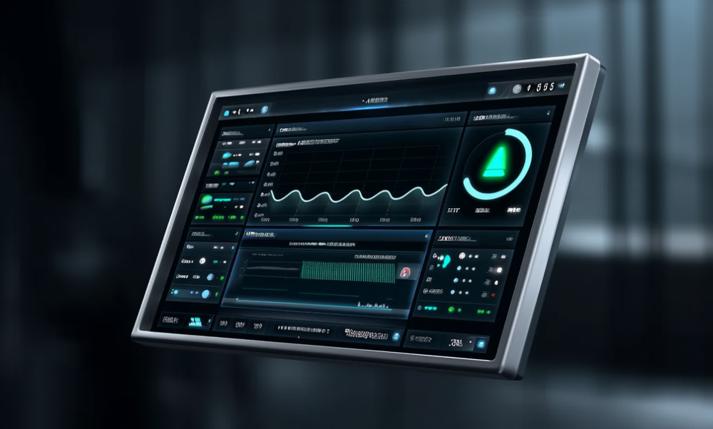
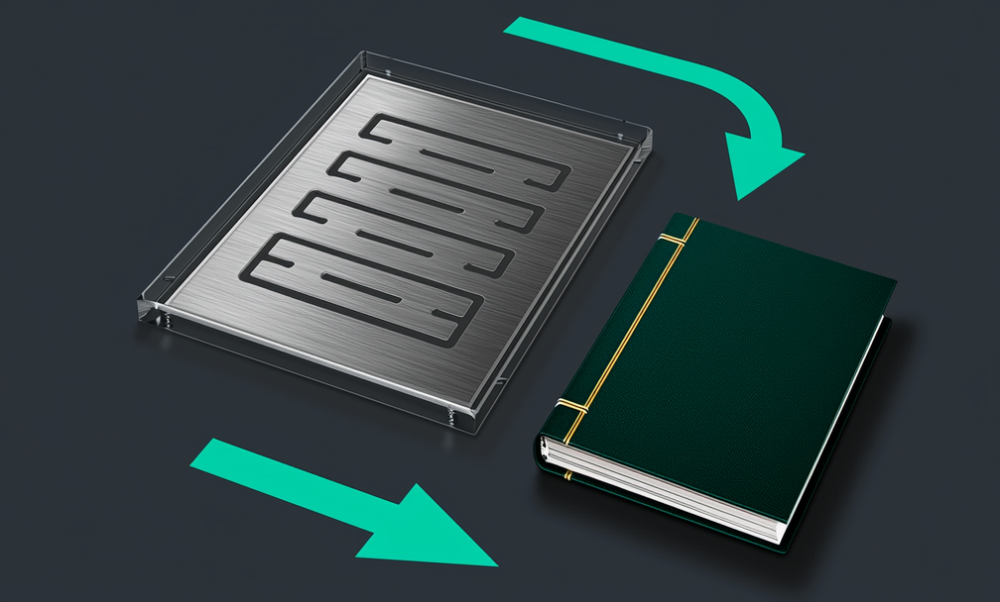
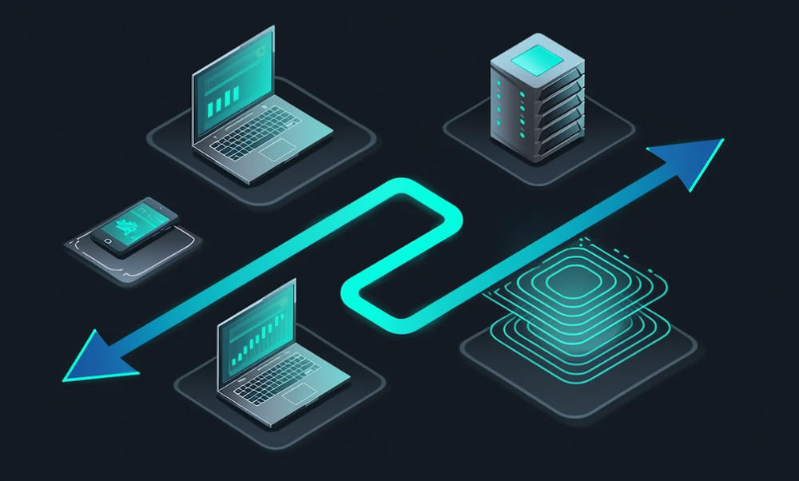

11 大场景 · 38 项服务 · 8 行业细分
每一项点开看「它解决什么、我们怎么做、你最后拿到什么、边界在哪」。不卖万能系统，只把值得优化的环节做顺、做省、做得不漏。



很多老板卡住的不是「没工具」，是不知道从哪开始、资料能不能用、员工愿不愿意用、做完有没有用。零创就解决这四个「不知道」。
以上为逻辑说明，具体数字在诊断后按方案给，不提前公开；第一次沟通不收费、不承诺结果。完整口径见 联系合作 · 报价逻辑。